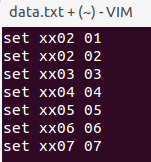
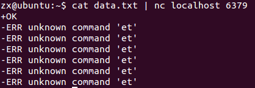
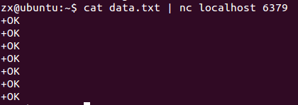
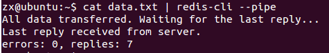
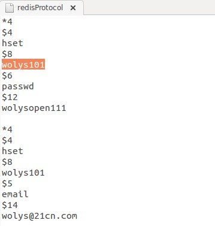
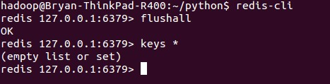
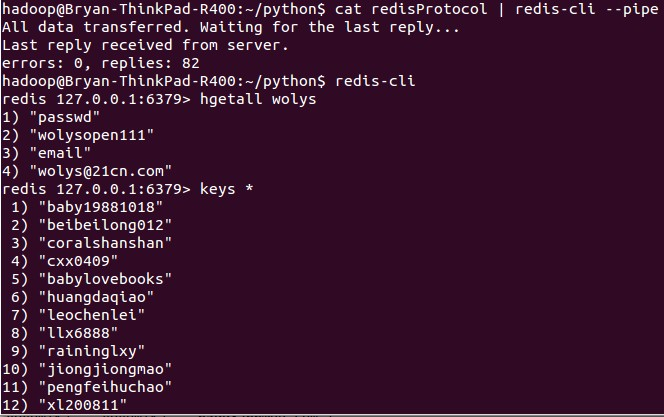

Redis 大容量插入: Redis Mass Insertion
一些废话
研究redis的使用已经跨越了两到三周的时间了，
停停走走的，这周一定要全部搞完了。
在目前实现的一些过程中，遇到了好几个很有意义的问题，有的完美解决了，有的绕过了，有的还在schedule上。
今天晚上下班，继续看了些之前Chrome中打开的Redis的系列解释的文章
我有个习惯，遇到一个知识的时候，会一股脑搜索很多相关知识，然后全部用浏览器打开
而之所以前强调了下用Chrome的原因，是在打开很多tab的时候，chrome的展现方式是最好的了。
safari的tab:
chrome的tab:
当然了，Chrome对内存的消耗，那也是…
不过在打开了很多的tab之后，慢慢享受一个一个的关闭它们感觉，也是挺好的～
言归正传
今晚主要看了三个知识点：Redis中管道(pipelining)的使用，Redis中大容量数据插入(mass insertion)以及linux下netcat的功能。
这次就简单说下大容量数据插入的问题吧。
使用redis客户端插入
使用客户端一条一条的插入，当然是在功能上完全没问题的。
但是并不推荐，因为一条一条语句的插入，是十分耗时的(the round trip time)
而另一方面，只有一小部分的redis client支持non-blocking I/O，但同时为了最大化吞吐量，不是所有的客户端可以很高效的解析redis服务器回复
使用文本文件来实现
首先，我们需要创建一个文本文件，
该文本文件中存放的是redis命令的raw data。
例如，我们使用data.txt：

语句文本创建好了之后，我们需要做的就只剩下：喂给redis服务器了
管道pipelining的使用
通过利用linux下的netcat工具，结合管道功能，就有了：1
(cat data.txt; sleep 10) | nc localhost 6379 > ./log
当然，这个时候，你可能遇到了这样的一个错误：

这是因为， linux文档的换行是\n,但文档要求每行的结尾是\r\n.
因此，请安装1
sudo apt-get install dos2unix
然后运行1
unix2dos data.txt
tada~~ok

管道的确很好的解决了上一种方式的round trip time问题。
但是mass insertion是希望在高速插入的同时，可以高速的接收消息，从而确定自己是否插入的足够快的信息。
而管道却没办法快速知道：
＊ 啥时候所有数据都传输完毕；
＊ 传输过程中有无发生错误；
通过redis的pipe mode
1 | cat data.txt | redis-cli --pipe |
这时候，我们会得到这样的输出：1
2
3All data transferred. Waiting for the last reply...
Last reply received from server.
errors: 0, replies: 1000000
如图:

那么redis-cli –pipe 到底做了什么呢？
- redis-cli –pipe 尝试着以最快的速度发送数据到redis服务器；
- 同时，一有机会，它就会读取并且解析数据；
- 一旦在stdin中没有数据可读了，它会发送一串随机的20 Bytes的特殊echo命令，那么，只要我们收到同样的完整的20 Bytes的回复，那么我们就能确定最近的一条消息发送成功。
- 只要这条特殊的最终命令发送出去，等待回复的程序就会开始匹配收到的每一条回复与这串特殊的字串是否相同，一旦收到相同的字串，那就可以成功退出了。
通过上述的方式，如果我们需要知道发送出去了多少条数据，就不需要再去解析我们发送到服务器的数据了，而只需要去解析回复的消息即可。
然而，在解析收到的回复时，我们会逐一计数，这样就可以返回给用户本次mass insertion一共发送了多少条数据。
别人的工作
使用程序来生成文件
原文在此
先整理需要导入需要的redis Protocol数据格式

现举例说明如下：
格式说明
*4 #表示有4个参数（hset, wolys101, passwd, wolysopen111）
$4 #表示“参数”有三个字节(“HSET”字符串为4个字节)
hset #执行的命令
$8 #key有 8个字节
wolys101 #key对应的值
$6 #field对应的长度
passwd #field对应的值
$12 #value的长度
wolysopen111 #value的值#一条语句结束
每行默认以 \r\n 结尾
同时在执行玩一行后，以 \r\n 代码一条语句结束
使用python整理其格式代码为：1
2
3
4
5
6
7
8
9
10
11
12
13
14
15
16
17
18
19
20
21
22
23
24
25
26
27
28
29
30
31
32
33
34
35
36
37
38
39
40
41
42
43
44#coding=utf-8
import sys
f = open(r'/media/hadoop/SOFTWARE/study/nosql/course/第5周作业素材.txt')
fsave = open('redisProtocol', 'w+')
try:
line = f.readline()
while line:
#注意这的splite中的区分使用的 ' # '方式，如果#区分在密码中如果有#字符的会拆分不正确
row = line.strip().split(' # '),
print row[0]
(useid, pwd, email) = row[0];
fsave.write('*4'+'\r\n')
fsave.write('$4'+'\r\n')
fsave.write('hset'+'\r\n')
fsave.write('$%d'%len(useid)+ '\r\n')
fsave.write(useid+ '\r\n')
fsave.write('$6'+'\r\n')
fsave.write('passwd'+'\r\n')
fsave.write('$%d'%len(pwd)+ '\r\n')
fsave.write(pwd+'\r\n')
fsave.write('\r\n')
fsave.write('*4'+'\r\n')
fsave.write('$4'+'\r\n')
fsave.write('hset'+'\r\n')
fsave.write('$%d'%len(useid)+ '\r\n')
fsave.write(useid+ '\r\n')
fsave.write('$5'+'\r\n')
fsave.write('email'+'\r\n')
fsave.write('$%d'%len(email)+'\r\n')
fsave.write(email+'\r\n')
fsave.write('\r\n')
line = f.readline()
finally:
#file最后一定要close（）
f.close()
fsave.close()
相关截图如下:


以上